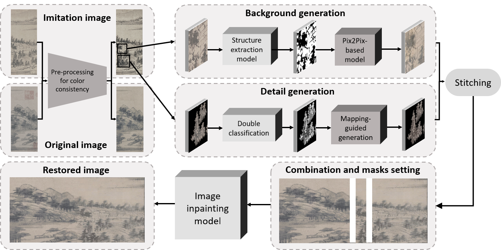
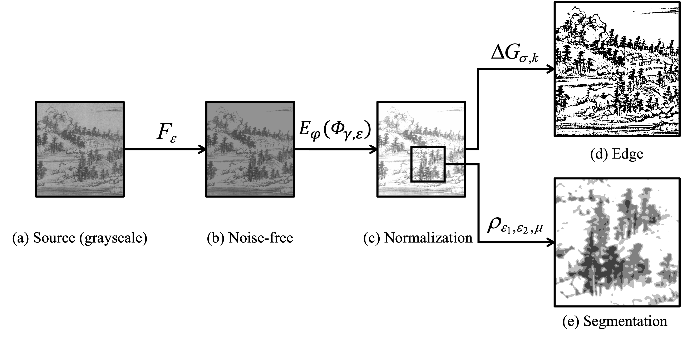
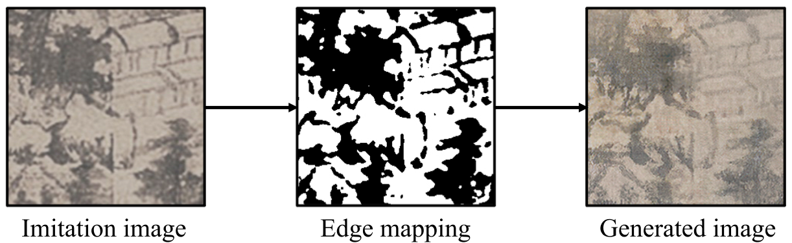

Hierarchical Painter: Chinese Landscape Painting Restoration with Fine-grained Styles
About this project
Classical Chinese landscape paintings are invaluable treasures of Chinese culture, but many of the surviving works have been damaged or defaced due to historical events and storage issues. Despite the effort that artists have made to restore them through imitation, they have struggled to replicate the original painters' unique style due to individual painting habits. With recent advances in machine learning and image processing, leveraging such technologies to restore ancient Chinese landscape paintings has emerged as a promising solution.

Technical details
To address the challenge brought by the unique characteristics of Chinese landscape paintings, we propose the hierarchical painter, a multi-hierarchical inpainting model for Chinese landscape painting restoration. First, we design a normalization algorithm for Chinese landscape painting including purifying backgrounds and eliminating noise, seals, and inscriptions. Then, we separately generate background and details to ensure the restoration performance in both overall structure and detailed texture. Specifically, we offer distinct designs to efficiently extract the structure and obtain the segmentation of details. Finally, we integrate the superposition of the background and details into the original image by inpainting models to maintain the overall consistency of the final restored image.
Chinese landscape paintings share a common attribute in that their contents are grayscale, and the background is typically blank. However, due to technological limitations in the conservation of paintings during ancient times, many surviving works have backgrounds that contain unwanted noise. These noise artifacts can have a detrimental effect on the performance of our model. To address this challenge, we pre-processed the input images by reducing or eliminating irrelevant noise and unifying the background color. This allowed us to achieve more accurate and precise inpainting results, even in the presence of challenging noise artifacts.
Background generation is a key component of our proposed model, as it aims to transfer the style of objects in the background of the imitation copy to those in the original painting. In our specific case, it is critical to preserve the content's structure in the background of the ZiMing Scroll, including the trend of mountains and rivers, while also translating the style of the content, such as shading, ink techniques, and stroke texture, to match the original painting's style. By incorporating these factors into our background generation algorithm, we were able to achieve highly realistic and faithful restorations of Chinese landscape paintings.
The image-to-image translation model is effective in natural image processing but less
effective in
restoring Chinese landscape paintings due to the complex structure of foreground trees,
which is
more like a blocky entity. The current model is unable to identify each stroke separately
within the
blocks. Additional image processing and model learning are required to learn the color
transition
within trees, considering their unique characteristics.
To address this issue, we propose a solution that includes creating a segmentation mapping
to
classify each pixel within the images and provide more information on how the color
transitions
within each stroke. Then, we employ the SPADE model to learn the color style
within each class and how the color transitions between classes.
.png)
To improve the integration of the generated part with the original image, we intentionally
inserted a
mask between the joined parts and applied image inpainting to fill it. This approach allows
the
generated result to consider the overall consistency with the original image rather than
solely
relying on the structure from the imitation image.
We apply a model similar to CTSDG, which focuses on regenerating defective
regions within an image while preserving its overall consistency. The model first transforms
the
input image into an edge map, and then fills the corrupted part based on the edge map to
ensure the
structural correctness of the fill content. Finally, the filled edge map is added with the
texture
of the original image. After research on several edge detection methods, we change the edge
detection model in CTSDG from canny detection to RCF to further emphasize the structure and
preserve
some space for random generation.
.png)